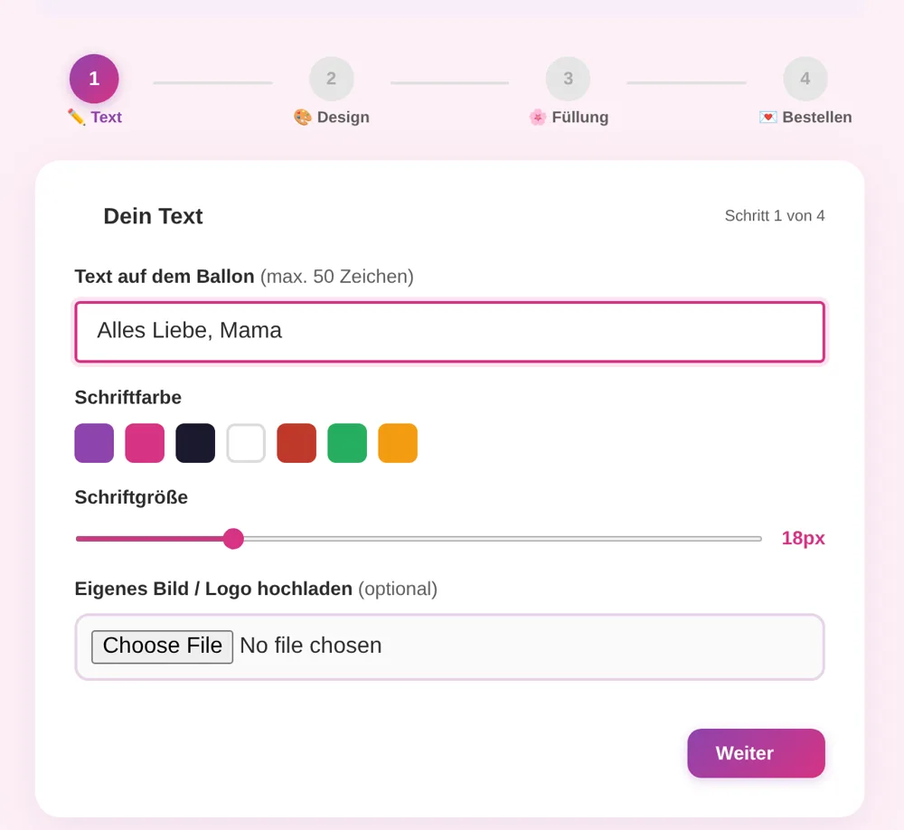

Fallstudie · E-Commerce · UX/UI & Frontend
Dandelion 11:11: Vom Konfigurator bis zur Bestellung, selbst gebaut
Ein Online-Shop für handgemachte, personalisierte Ballongeschenke aus Bad Wörishofen. Kundinnen und Kunden gestalten ihren Ballon selbst und sehen dabei live, wie er aussehen wird.
- Rolle
- Konzept, UX/UI, Frontend, Inhalte
- Zeitraum
- Seit Juni 2026
- Technik
- HTML, CSS, JavaScript, GitHub Pages
- Status
- Live
Ausgangslage
Angefangen hat Dandelion 11:11 auf Facebook und Instagram, später kamen ein TikTok Shop und eine Linktree-Seite dazu. Die Ballons kamen gut an, aber das Bestellen war mühsam: Absprachen liefen über Nachrichten, und für Interessierte war nicht klar sichtbar, wie sie eigentlich bestellen und bezahlen können.
Das Ziel war deshalb ein eigener Shop, in dem der Weg vom ersten Gedanken bis zur bezahlten Bestellung an einem Ort liegt und für jeden sofort verständlich ist.
Die Vorschau zeigt den Ballon schon beim Tippen, damit niemand blind bestellt
Ein personalisiertes Geschenk ist schwer vorstellbar. Deshalb steht links ein Ballon, der sich bei jeder Eingabe sofort verändert: Text, Schriftfarbe und -größe, Ballonfarbe, Symbol, Text-Effekt und Füllung. Wer möchte, lädt zusätzlich ein eigenes Bild oder Logo hoch.

Vier kurze Schritte statt eines langen Formulars
Über ein Dutzend Optionen auf einer Seite hätten erschlagen. Der Konfigurator teilt sie in Text → Design → Füllung → Bestellen. Eine Fortschrittsleiste und „Schritt 2 von 4“ zeigen jederzeit, wie weit es noch ist, und „Zurück“ führt ohne Datenverlust zum vorherigen Schritt.

Aufpreise stehen direkt an der Option, nicht erst im Warenkorb
Jeder Ballontyp zeigt seinen Aufpreis direkt in der Auswahl, zum Beispiel „Herz-Ballon (+3,00 €)“ oder „Bubble-Ballon (+9,00 €)“. Versandkosten und die Grenze für kostenlosen Versand sind klar benannt. So gibt es am Ende keine Überraschung.
Ein klarer Weg zum Bezahlen, WhatsApp nur noch als Alternative
Anfangs gab es mehrere Bestellwege nebeneinander, auch eine Personalisierung per WhatsApp nach dem Kauf. Das sorgte für widersprüchliche Hinweise. Ich habe den Ablauf deshalb vereinfacht: Bezahlt wird direkt im Warenkorb über PayPal, auf Wunsch auch per Kreditkarte ohne PayPal-Konto. WhatsApp bleibt für Fragen und Sonderwünsche und danach nur noch für die Abstimmung des Liefertermins.
Eine Bestellung ist erst fertig, wenn sie vollständig bei mir ankommt
Hinter dem Shop steht eine kleine Bestellverwaltung mit Firebase. Jede Bestellung bekommt eine lesbare Nummer wie D-123456, Kundinnen sehen ihre Bestellungen unter „Meine Bestellungen“, und ich sehe alle Bestellungen in einer eigenen Admin-Ansicht.
Genau hier lag die größte Hürde: Die PayPal-Integration war schwierig, manche PayPal-Bestellungen wurden nicht gespeichert, Benachrichtigungen kamen nicht an, und nicht alle Felder aus dem Konfigurator landeten in der Bestellung. Für einen personalisierten Ballon fehlt dann genau das Wichtigste. Ich habe den Weg Schritt für Schritt nachverfolgt, bis jede Bestellung mit Text, Farben, Symbol, Füllung, Telefon und Lieferadresse vollständig ankam.
Eigene Seiten pro Anlass, damit man den Shop über Google findet
Menschen suchen nicht nach „Ballon“, sondern nach „Geschenk zur Einschulung“ oder „Ballon zur Hochzeit“. Deshalb gibt es eigene Seiten für Geburtstag, Hochzeit, Babyparty, Einschulung, Jugendweihe, JGA und Valentinstag, dazu ein Journal mit Geschichten aus dem Atelier.
Mit KI gebaut, von mir entschieden
Den Code habe ich mit Unterstützung von Claude geschrieben. Die Entscheidungen, also was der Konfigurator zeigt, in welcher Reihenfolge und mit welchen Worten, habe ich getroffen, getestet und immer wieder angepasst.
Was ich gelernt habe
- Den ganzen Weg testen, nicht nur den Bildschirm. Der Konfigurator sah früh fertig aus. Die eigentliche Arbeit steckte darin, dass die Daten auch vollständig dort ankommen, wo ich sie für die Fertigung brauche. Heute würde ich eine Testbestellung von Anfang an zum festen Teil jeder Änderung machen.
- Weniger Wege sind verständlicher. Jeder zusätzliche Bestellweg hat neue Fragen erzeugt. Erst mit einem klaren Hauptweg wurde der Shop wirklich einfach.
- Geschwindigkeit ist Teil der Nutzererfahrung. Die Bestellverwaltung lädt nur noch für mich als Inhaberin. Normale Besucherinnen sparen dadurch rund 200 KB JavaScript, und die Seite ist schneller da.